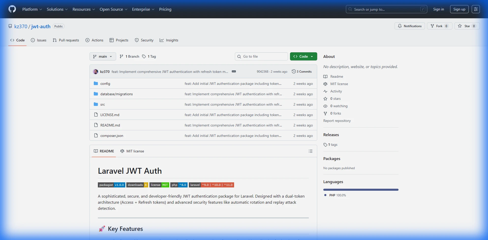

Laravel JWT Auth.
A secure JWT package for Laravel APIs with dual-token auth, refresh rotation, replay attack detection, and per-device session controls.
Dual-Token Flow With Safer Sessions.
JWT Auth separates short-lived access tokens from refresh tokens, then protects refresh-token storage via hashing and family-based rotation.
When suspicious refresh replay occurs, the package can revoke the entire token family to contain compromise quickly.
Dual Token Architecture
Access + refresh design for secure, long-lived sessions.
Replay Detection
Detects reused refresh tokens and revokes compromised families.
Device Sessions
List, revoke, and manage sessions across user devices.
Laravel Integration
Supports middleware, guards, and migration from Sanctum/Passport.

Authentication Designed for Production APIs.
JWT Auth provides a practical security baseline for Laravel backends that need clean token lifecycle management without sacrificing developer experience.